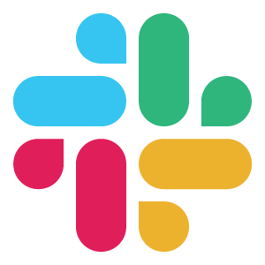
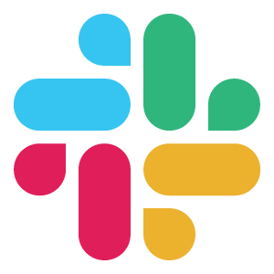
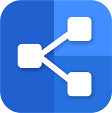
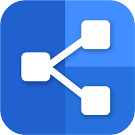

After working in the education field for several years, I was eager to find a path that better suited my personality and abilities. I was introduced to software development by a family member and was instantly intrigued. After engulfing myself in self study and learning the very basics of coding, I decided to make the leap into it and attended an intense bootcamp program at Nashville Software School. There I realized that I was using all of the positive things that I learned from being a teacher, while also utilizing the new passion I have for coding. I'm excited to continue on this path that celebrates growth and gives me the ability to learn new things everyday.
When I am not growing my skills in development, you can typically find me reading, or binging Netflix. I have a love for all things mystery, including true crime documentaries and authors like Stephen King, but you can also catch me watching re-runs of Friends or The Nanny. My husband and I regularly go camping in our 1997 Dutchman pop-up while exploring waterfalls and hiking trails. I also am a huge animal lover (even though I don't have any pets of my own yet) who very frequently visits the Nashville Zoo. I'm definitely an open-minded individual who loves to listen to others share stories of their experiences and build strong connections with people.
If my experience or personality seem like they might fit with your group or company, please reach out to me! I would love to discuss things more with you!


 



 


Intensive full-time 6-month software development bootcamp anchoring learning with both individual and team-based projects. The tech stacks include JavaScript/React, HTML and CSS for front-end development with Python/Django and SQLite framework for back-end. Freqently used libraries such as Bootstrap and Material UI for better user experience in design. Also, gained a lot of experience in modeling a remote work environment due to COVID19 measures by using tools such as Slack and Zoom for daily communication and Git/Github for project management.
As a 5th grade language arts and social studies teacher, I gained a lot of experience in orgnization and collaboration by engaging in regular team meetings to plan and discuss students' behavior and curriculum implementation. Solved problems on a daily basis by being flexible while still sticking to original plans to complete my learning objectives and goals. Analyzed data to better meet students' individual learning needs and implemented necessary changes in curriculum accordingly. Utilized technology with students like I-Ready, Clever, and Quizizz. Also, utilized technology like Skyward and ClassDojo for grading and parent communication.
Very similarly to my time spent at Rutherford County Schools, I was a teacher for 3 years through Fairlawn Local Schools. Through teaching 4, 5th, and 6th grade language arts and social studies, I created and implemeneted my own reading curriculm which was later adapted to be used school wide for multiple grade-levels. Utilized Microsoft Suite to create worksheets, tests, and activities to include in my curriculum. Met regularly with team members to discuss data, and student's needs. Used technology such as Progress Book, CommonLit, Newsela and No Red Ink.
While working as a bank teller, I managed customers' bank accounts by performing regular depostis, withdraws and other bank procedures. I gained a lot of experience with the importance of organization to ensure money was handled properly and customers' information was kept protected. Utlized bank technology including the teller program and the online training platform. Worked with branch leadership and co-workers to create a friendly and effective banking experience for customers.

My Closet Keeper is a single page responsive CRUD application that allows users to keep their personal closet up to date. Inspired by my own personal needs, this application gives users the ability to create outfits and plan their suitcase for upcoming trips. Everything in this app was built using React framework for JavaScript and was styled using CSS, React-Strap and the Material UI. This application also explored the use of Cloudinary so the user can upload pictures and keep them saved to internal APi.

Something Blue is a full-stack responsive application. Inpsiration came from my current part-time job at David's Bridal, where I get to be apart of a very important step in the wedding planning process (finding their dream dress!). But through all of my brides and my own experience of planning a wedding, I know that it is not an easy task and requires a lot! To help keep the planning organized, I created Something Blue to help brides keep a checklist of what they need to get done, update their budget and guest list and even save inspiration pictures all in one place. More details to come...
Rare is an application created in a collaborative group using React.js framework, CSS, and HTML for front-end development and Python/Django and SQLite for backend. This application provides an easy environment for users to be able to share articles, comment and react to content, and subscribe to other users. Personally responsible for building the update functionality on the backend and frontend for user’s posts, restricting user’s capabilities depending on their status, and styling different components for a more user-friendly experience.
.png)
Nutshell is a responsive application created using JavaScript, CSS, and HTML. This application provides an easy environment for a group of users to keep up on daily tasks, the weather, local created events and to add and message friends. Nutshell was a collaborative project created to serve a specific audience (romance novelist) through its features. Personally responsible for building out the CRUD functionality of the events component and styling the application using CSS to appeal to our audience.